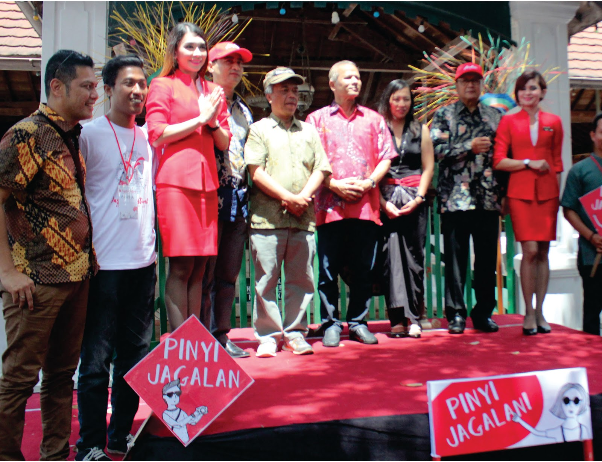

Jagalan Festival adalah sebuah rangkaian pertunjukan seni dan budaya yang menampilkan potensi-potensi Jagalan yang digelar secara menyeluruh di Desa Jagalan. Kegiatan ini salah satu bagian dari konservasi seni melalui kewirausahaan yang dimotori Karang Taruna dengan dukungan para sponsorship, salah satu yang menjadi sponsorship utama yaitu Air Asia Foundation. Kegiatan ini diawali dengan upaya pemetaan potensi Desa Jagalan sejak tahun 2013.

Inisiatif ini mendorong terselenggaranya berbagai aktivitas kewirausahaan sosial lainnya, salah satunya adalah Jagalan Tlisih.
*) untuk mengatahui apa itu Tlisih Jagalan, silakan kunjungi pada konten lainnya di website ini